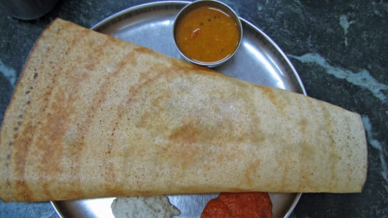
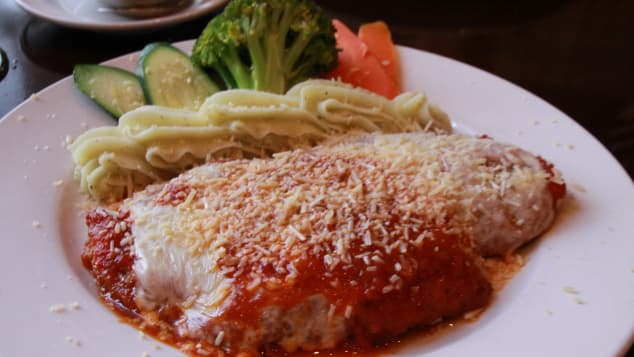

Masala dosa, India |
 | A crispy, rice-batter crepe encases a spicy mix of mashed potato , which is then dipped in coconut chutney, pickles, tomato-and-lentil-based sauces and other condiments. It's a fantastic breakfast food that'll keep you going till lunch, when you'll probably come back for another. |
Seafood paella, Spain |
 |
The sea is lapping just by your feet, a warm breeze whips the tablecloth around your legs and a steamy pan of paella sits in front of you. Shrimp, lobster, mussels and cuttlefish combine with white rice and various herbs, oil and salt in this Valencian dish to send you immediately into holiday mode. Though if you have it in Spain, you're probably there already. |
Chicken parm, Australia |
 | Melted Parmesan and mozzarella cheese, and a peppery, garlicky tomato sauce drizzled over the top of a chicken fillet Aussie pub-goers claim this ostensibly Italian dish as their own. Since they make it so well, there's no point in arguing. |